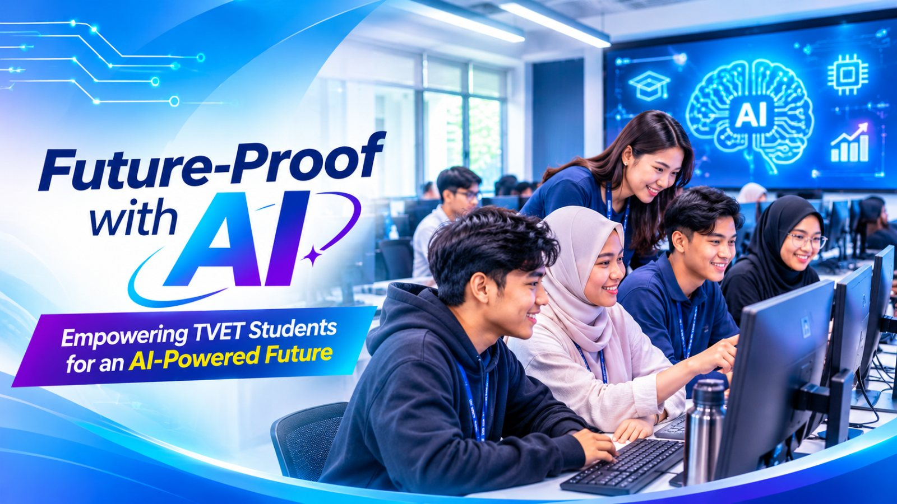

Fasa 1: Kelas Rintis
19 dan 20 Mei, 8 dan 10 Jun 2026. Kelas AI secara dalam talian melalui Zoom untuk menguji kandungan dan kaedah penyampaian.
Laman pembelajaran
Program kesedaran dan kemahiran AI untuk pelajar TVET Politeknik dan Kolej Komuniti Zon Negeri Sembilan dan Melaka.
Terokai Modul AI
Future-Proof with AI ialah program kerjasama antara Unit Bahasa Inggeris, Jabatan Pengajian Am, Politeknik Port Dickson dengan SOLS Foundation dan tajaan CIMB Foundation. Program ini bertujuan meningkatkan literasi AI, keselamatan digital dan kemahiran produktiviti digital dalam kalangan pelajar TVET. Peserta didedahkan kepada penggunaan AI secara beretika dan bertanggungjawab untuk pembelajaran serta pembangunan kerjaya. Program dilaksanakan dari Mei hingga Oktober 2026.
19 dan 20 Mei, 8 dan 10 Jun 2026. Kelas AI secara dalam talian melalui Zoom untuk menguji kandungan dan kaedah penyampaian.
16 Jun 2026. Bengkel di Politeknik Port Dickson untuk menyelaras peranan, jadual dan pelaksanaan program bersama sembilan institusi POLYCC.
7 Julai hingga 1 Oktober 2026. Sebanyak 24 kelas dilaksanakan untuk pelajar daripada sembilan institusi POLYCC.
Empat modul: Protect Yourself Online with AI, Use AI Responsibly, Digital Balance in the AI Era dan Manage Your Digital Footprint.
Empat modul: Ace Your Exams with AI, Prepare for Your Career with AI, Ace Your Interview with AI dan Work Faster with AI Prompts.
Dua modul: Build Apps with AI-Assisted Coding dan Create Video Content with AI. Siri ini turut merangkumi aktiviti AI Image Generation.
Pelajar TVET Politeknik dan Kolej Komuniti Zon Negeri Sembilan dan Melaka.
Ya. Modul kelas AI ditawarkan secara percuma oleh SOLS Foundation.
Pengajaran dijalankan secara dalam talian melalui Zoom. Pelajar berkumpul secara fizikal di institusi masing-masing dan membawa peranti sendiri.
Peserta boleh menerima Certificate of Achievement bagi setiap siri dan Certificate of Proficiency selepas melengkapkan kesemua 10 modul.
Tenaga pengajar daripada SOLS Foundation.
Ingin mengetahui lebih lanjut tentang Program Future-Proof with AI? Hubungi Unit Bahasa Inggeris, Jabatan Pengajian Am, Politeknik Port Dickson melalui saluran rasmi institusi. Maklumat hubungan: (isi di sini).